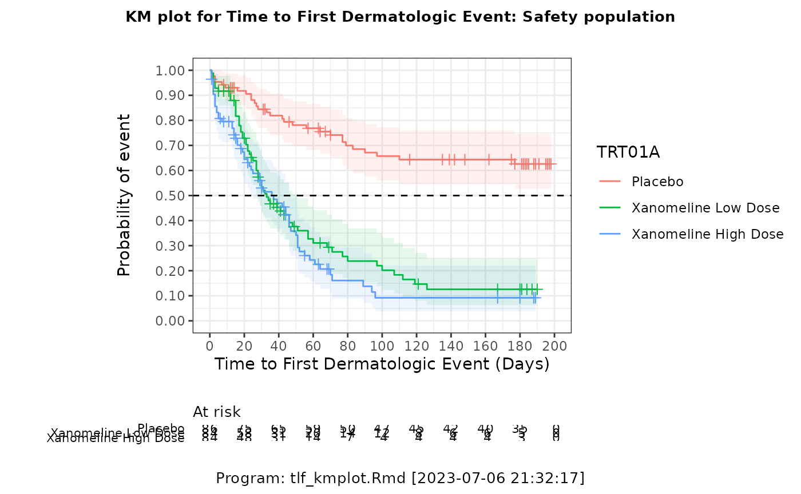

CDISC Pilot: Kaplan-Meier Plot for Time to First Dermatologic Event
tlf-kmplot.Rmd
# Working directory requires write permission
if (file.access(".", 2) != 0) {
warning(
"The working directory '", normalizePath("."), "' is not writable.\n",
"Please change it to a location with write permission."
)
}
knitr::opts_chunk$set(echo = TRUE)
# CRAN package, please using install.packages() to install
library(haven)
library(dplyr)
library(ggplot2)
library(cowplot)
library(visR)
# Propitiatory Package, please refer appendix of ADRG to install
library(pilot1wrappers)Step 2: Data preparation for endpoint TTDE
anl <- adsl %>%
dplyr::filter(
SAFFL == "Y",
STUDYID == "CDISCPILOT01"
) %>%
dplyr::select(STUDYID, USUBJID, TRT01A) %>%
dplyr::inner_join(
filter(
adtte, PARAMCD == "TTDE", STUDYID == "CDISCPILOT01"
) %>% select(STUDYID, USUBJID, AVAL, CNSR, PARAM, PARAMCD),
by = c("STUDYID", "USUBJID")
) %>%
dplyr::mutate(
TRT01A = factor(TRT01A, levels = c("Placebo", "Xanomeline Low Dose", "Xanomeline High Dose"))
)Step 3: Kaplan-Meier Plot and Save to Output
# estimate survival
surv_mod <- visR::estimate_KM(data = anl, strata = "TRT01A")
# save plot
ggplot2::theme_set(theme_bw())
pdf.options(reset = TRUE, onefile = FALSE)
#pdf(file.path(path$output, "tlf-kmplot.pdf"))
km <- visR::visr(surv_mod,
y_label = "Probability of event\n",
x_label = "Time to First Dermatologic Event (Days)",
y_ticks = seq(0, 1, 0.10)
) %>%
add_CNSR() %>%
add_CI()
km <- km +
ggplot2::geom_hline(yintercept = 0.5, linetype = "dashed")
km <- km %>%
visR::add_risktable(group = "statlist")
title <- cowplot::ggdraw() +
cowplot::draw_label(
"KM plot for Time to First Dermatologic Event: Safety population\n",
fontfamily = "sans",
fontface = "bold",
size = 10
)
caption <- cowplot::ggdraw() +
cowplot::draw_label(
paste0("\nProgram: tlf_kmplot.Rmd [", Sys.time(), "]"),
fontfamily = "sans",
size = 10
)
km <- cowplot::plot_grid(
title, km, caption,
ncol = 1,
rel_heights = c(0.1, 0.8, 0.1)
)
print(km)
dev.off()## null device
## 1